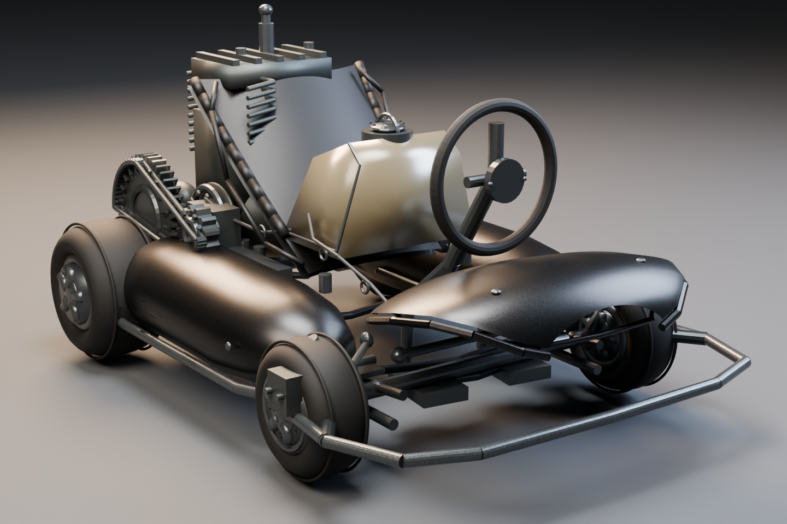
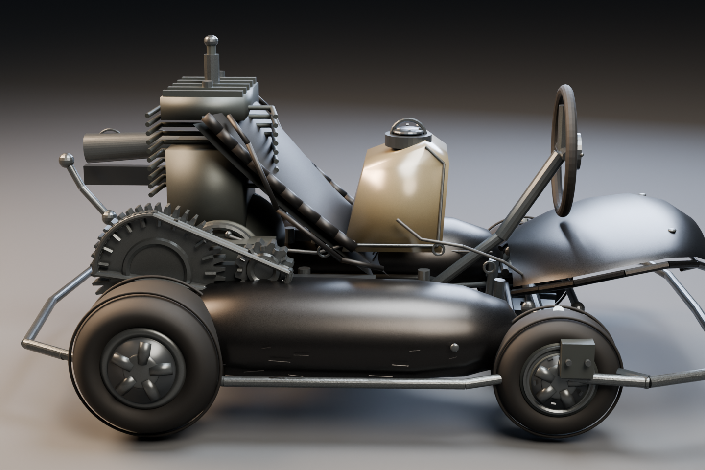
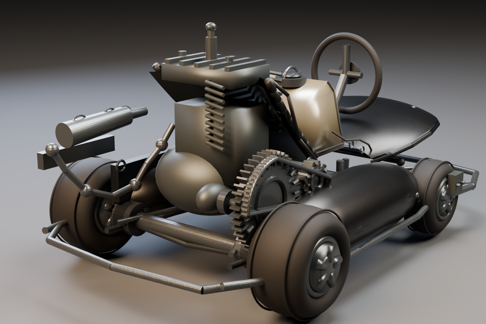
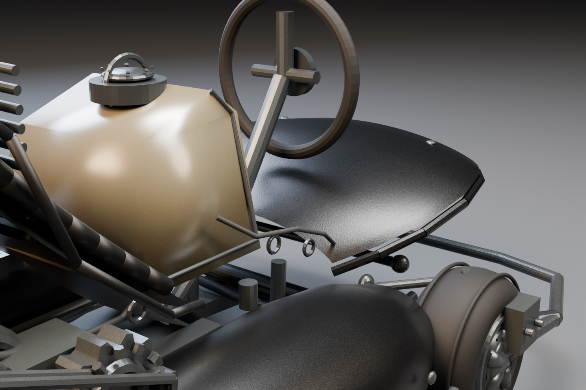

Front detail 01

Blender Cycles views · metric scale · separated component meshes




The model is a procedural, editable reconstruction. Compare its proportions and parts with the reference; it is not a photogrammetry scan or a claim of photographic realism.